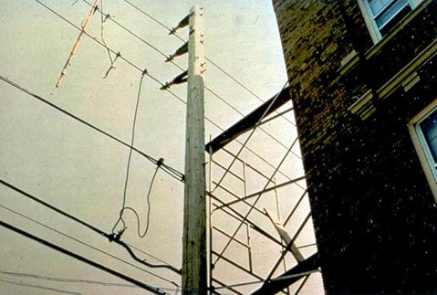

Fabricated frame scaffolds are the most common type of scaffold because they are versatile, economical, and easy to use. They are frequently used in one or two tiers by residential contractors, painters, etc., but their modular frames can also be stacked several stories high for use on large-scale construction jobs. NOTE: Except where indicated, the same basic scaffold requirements that appear in this module also apply to manually propelled, pump jack, ladder jack, tube and coupler, and pole scaffolds, as well as the specialty scaffolds described in Supported Scaffolds. Additional requirements for these scaffolds can be found in their respective modules.
Use this training tool to review the safety requirements for a frame scaffold, in the following phases:
Access
Workers are most vulnerable to fall hazards when climbing on or off a scaffold. Therefore, employers are required to provide safe scaffold access. Erectors and dismantlers face additional access problems due to the incomplete condition of the scaffolding. Requirements to prevent falls that apply only to these workers are addressed separately below.
NOTE: Except where indicated, these requirements also apply to manually propelled, pump jack, ladder jack, tube and coupler, and pole scaffolds, as well as the specialty scaffolds described in the Supported Scaffolds module.

- Employees must be able to safely access any level of a scaffold that is 2 feet above or below an access point.
- OSHA standards specifically forbid climbing cross-braces as a means of access.
Improper Access Leads to Serious Injuries
Case Report:
- The victim was climbing the end-frame of a three-tiered metal scaffold when a midrail pulled loose. He fell approximately 12 feet to a concrete dock. He suffered multiple fractures to the head, left and right foot, and left wrist, and torn ligaments in the knees.
Figure 6. Example of a frame scaffold with portable ladder for access. Could it tip the scaffold?
- Portable, hook-on, and attachable ladders must be positioned so as not to tip the scaffold. (Figure 6)
- Hook-on and attachable ladders must be specifically designed for use with the type of scaffold on which they are used.
-
Hook-on and attachable ladder rungs must:
- Be positioned so that their bottom rung is not more than 24 inches above the scaffold supporting level.
- Have uniform spacing between rungs of a maximum 16¾ inches.
- Have minimum rung length of 11½ inches.
- Have rest platforms provided at a maximum of 35-foot vertical intervals.
-
Stairway-type ladders must:
- Be positioned so that their bottom step is not more than 24 inches above the scaffold supporting level,
- Have rest platforms at maximum vertical intervals of 12 feet,
- Have a minimum step width of 16 inches, except for mobile scaffold stairway-type ladders, which shall have a minimum step width of 11½ inches , and
- Have slip-resistant treads on all steps and landings.
- Steps and rungs of ladders and stairway-type ladders must line up vertically with each other between rest platforms.

Figure 7. Stair tower with stair rail, including toprail and midrail.
Integral (built-in) scaffold access frames must:
- Be specifically designed and constructed for use as ladder rungs.
- Not be used as work platforms when rungs are less than 11½ inches in length, unless each affected employee uses appropriate fall protection.
- Have rungs which are uniformly spaced and a length of at least 8 inches, with a maximum space between rungs of 16¾ inches.
- Have rest platforms provided at a maximum of 35 foot vertical intervals.
Stair towers (scaffold stairway/towers) must have (Figure 7):
- A stair rail consisting of a toprail and a midrail on each side of the stairway.
- A toprail of each stair rail system capable of serving as a handrail, unless a separate handrail is provided.
- Sufficient handhold on handrails, and toprails serving as handrails, for employees grasping them to avoid falling.
- Stair rails and handrails surfaced to prevent punctures or lacerations to employees, and to prevent snagging of clothing.
- Ends of stair rails and handrails constructed so that they do not constitute a projection hazard.
- A space of at least 3 inches between handrails, or stair rails used as handrails, and other objects.
- A distance of no less than 28 inches and no more than 37 inches from the upper surface of the stair rail to the forward edge of the tread, in line with the face of the riser.
- A landing platform at least 18 inches wide by 18 inches long at each level.
- A scaffold stairway width of at least 18 inches between stair rails.
- Slip-resistant surfaces on treads and landings.
- Stairways installed between 40 degrees and 60 degrees from the horizontal.
- Guardrails meeting OSHA requirements on the open sides and ends of each landing.
- Uniform riser height, within ¼-inch, for each flight of stairs. Greater variations in riser height are allowed for the top and bottom steps of the entire system (not for each flight of stairs).
- Uniform tread depth, within ¼-inch, for each flight of stairs.
- Ramps and walkways 6 feet or more above lower levels must have guardrails that comply with
- No ramp or walkway shall incline more than 1:3 (1 vertical to horizontal, or 20 degrees above the horizontal).
- If a ramp or walkway has a slope of more than 1:8, it must have cleats securely fastened to the planks not more than 14 inches apart, to provide footing.
Figure 8. Example of direct access.
Direct access to or from another surface is permitted only when the scaffold is not more than 14 inches horizontally and not more than 24 inches vertically from the other surface.
Figure 9. Install ladder as soon as possible during scaffold erection.
- Employers are required to provide safe access for employees erecting or dismantling supported scaffolds where it is feasible, and where it does not create a greater hazard.
- Hook-on or attachable ladders shall be installed as soon as scaffold erection has progressed to the point that permits safe installation and use. (Figure 9)
-
When erecting and dismantling tubular, welded-frame scaffolds, end frames may be used as climbing devices for access, provided that :
- Horizontal members are parallel, level, and not more than 22 vertical inches apart.
- They are erected in a manner that creates a usable ladder and provides good hand hold and foot space.
- Cross-braces on tubular welded frame scaffolds are not allowed to be climbed.
The competent person is responsible for determining the safety and feasibility of installing and using safe means of access, based on site conditions and the type of scaffold involved.
Electrical Hazards
Because they may be built in proximity to overhead power lines, and because they are often made of metal, scaffolds can put workers at risk of electrocution. This risk can be removed through proper clearance and maintenance.
NOTE: Except where indicated, these requirements also apply to manually propelled, pump jack, ladder jack, tube and coupler, and pole scaffolds, as well as the specialty scaffolds described in the Supported Scaffolds module.
-
Scaffolds must not be close enough to overhead power lines that they, or any conductive materials (e.g. building materials, paint roller extensions, scaffold components) that may be handled on them, come closer than 10 feet to the power line. (Figure 18)
- Exception: Insulated power lines of less than 300 volts have a safe distance of only 3 feet.
-
Scaffolds may be closer to overhead power lines than specified below if such proximity is necessary for the type of work being done, and if the power company or electrical system operator has been notified and has either :
- De-energized the lines (Figure 17).
- Relocated the lines.
- Installed protective coverings to prevent accidental contact with the lines.
Tip: Because it may be difficult to determine if a power line is insulated, or what its exact voltage is, the 10 foot rule should always be applied.
-

Figure 17. Example of powerlines that have been grounded.
-

Figure 18. Example of scaffold being built dangerously close to power lines.
Because metal frame scaffolds are conductive, power tools, cords, etc., that suffer insulation failure can electrify the entire scaffold. This poses a risk of electrocution not just to the worker holding the tool, but to everyone who contacts the scaffold. Therefore, all portable electric equipment must be protected by:
- GFCIs (ground-fault circuit interrupters)
- Or an AEGCP (assured equipment grounding conductor program, in accordance with
Tip: Often, a worker who is shocked survives the current, only to lose balance and be killed in a fall. This is one more reason for always using fall protection.
Personnel Training and Competent Persons
Critical to scaffolding safety are the use of competent persons for the design, erection/dismantling, and maintenance of scaffolds, and trained workers for their use. Therefore, assessing personnel abilities should be a part of all phases of the scaffolding inspection.
NOTE: Except where indicated, these requirements also apply to manually propelled, pump jack, ladder jack, tube and coupler, and pole scaffolds as well as the specialty scaffolds described in the Supported Scaffolds module.
Figure 19. Scaffold that was not constructed and loaded in accordance with design.
- Scaffolds must be designed by a qualified person, and be constructed and loaded in accordance with that design (Figure 19).
- Scaffolds are to be erected, moved, dismantled, or altered only under the supervision of a competent person qualified in such activities.
- Scaffolds over 125 feet (38.0m) in height above their base plates shall be designed by a registered professional engineer, and shall be constructed and loaded in accordance with such design.
- Non-mandatory examples of criteria that will enable an employer to comply with
- Scaffolds are to be erected, moved, dismantled, or altered only by experienced and trained employees who have been selected for that work by the competent person.
-
Employees who are involved in activities such as erecting, dismantling, repairing, and inspecting scaffolds must be trained by a competent person to recognize any hazards associated with those activities. Training shall include :
- The nature of scaffold hazards.
- Correct procedures for erecting, disassembling, etc. the type of scaffold in question.
- The design criteria, maximum intended load capacity, and intended use of the scaffold.
- Any other pertinent requirements.
-
Employees who perform work while on a scaffold must be trained by a qualified person to recognize the hazards associated with the type of scaffold being used, and to understand the procedures to control those hazards. Training shall include :
- The nature of any electrical hazards, fall hazards, and falling object hazards in the work area.
- The correct procedures for dealing with those hazards.
- The proper use of the scaffold, and the proper handling of materials on the scaffold.
- The maximum intended load and the load-carrying capacity of the scaffold.
- Any other pertinent requirements.
-
Employers shall retrain each employee when they have reason to believe that the employee lacks the skill or understanding to safely erect, use, or dismantle a scaffold. Such retraining is required in at least the following situations :
- Changes at the worksite present a hazard for which an employee has not previously been trained.
- Changes in the types of scaffolds, fall protection, falling object protection, or other equipment present a hazard for which an employee has not previously been trained.
- Inadequacies in an affected employee's work indicate that the employee has not retained the necessary proficiency.
Worker Dies During Scaffold Erection
Case Report:
- An employee was constructing the third level of a tubular, welded-frame scaffold while standing on the second level. The scaffold was constructed on a poured concrete floor and had been leveled. Each section of the framework measured 6'5" high. The working surface was solidly planked. When the employee tried to set the third level frame into the pins of the second level, the frame he was trying to position flipped to one side. The momentum of the frame thrust the employee backward off the second level. He fell to the ground, sustaining a fatal blow to his head.